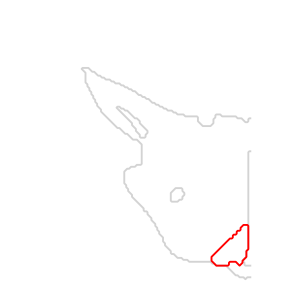
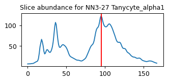
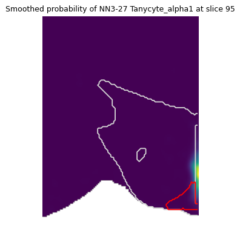
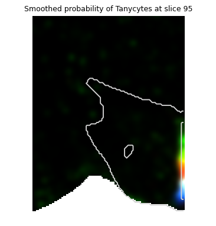

Spatial Slice Plotting#
This tutorial demonstrates how to handle the spatial voxel grid objects for the exploration of hypothalamus.
In this notebook, we will:
Load the smoothed voxel probabilities and region masks.
Explore the distribution of specific cell clusters (e.g., Tanycytes) across slices.
Visualize probability distributions, counts, and relative mass.
Requirements:
matplotlib,numpyandzarr>3.1python packages.The spatial Zarr object (if in .tar format, then decompress it).
[1]:
# Enable automatic reloading of modules during interactive work (optional)
%load_ext autoreload
%autoreload 2
[2]:
import matplotlib.pyplot as plt
import zarr # >3.1
import numpy as np
[ ]:
# Set the path to each the required objects
FP_SPATIAL_ZARR = r'REPLACE FILEPATH HERE'
Loading the voxel datasets#
We will load the datasets stored in Zarr format.
[5]:
voxel_store = zarr.open(FP_SPATIAL_ZARR, mode='r')
voxel_store.tree()
[5]:
/ ├── L1 │ ├── abc-like (6,) StringDType() │ ├── descr (6,) StringDType() │ ├── flags (6,) StringDType() │ ├── ids (6,) StringDType() │ ├── mass (6, 168, 144, 107) float32 │ ├── prob (6, 168, 144, 107) float32 │ └── rel_mass (6, 168, 144, 107) float32 ├── L2 │ ├── abc-like (82,) StringDType() │ ├── descr (82,) StringDType() │ ├── flags (82,) StringDType() │ ├── ids (82,) StringDType() │ ├── mass (82, 168, 144, 107) float32 │ ├── prob (82, 168, 144, 107) float32 │ └── rel_mass (82, 168, 144, 107) float32 ├── L3 │ ├── abc-like (274,) StringDType() │ ├── descr (274,) StringDType() │ ├── flags (274,) StringDType() │ ├── ids (274,) StringDType() │ ├── mass (274, 168, 144, 107) float32 │ ├── prob (274, 168, 144, 107) float32 │ └── rel_mass (274, 168, 144, 107) float32 ├── L4 │ ├── abc-like (716,) StringDType() │ ├── descr (716,) StringDType() │ ├── flags (716,) StringDType() │ ├── ids (716,) StringDType() │ ├── mass (716, 168, 144, 107) float32 │ ├── prob (716, 168, 144, 107) float32 │ └── rel_mass (716, 168, 144, 107) float32 ├── L5 │ ├── abc-like (932,) StringDType() │ ├── descr (932,) StringDType() │ ├── flags (932,) StringDType() │ ├── ids (932,) StringDType() │ ├── mass (932, 168, 144, 107) float32 │ ├── prob (932, 168, 144, 107) float32 │ └── rel_mass (932, 168, 144, 107) float32 ├── bbox │ ├── ccf_mm │ │ ├── max (3,) float32 │ │ └── min (3,) float32 │ ├── shape (3,) float32 │ └── voxel_25_um │ ├── max (3,) float32 │ └── min (3,) float32 ├── counts (168, 144, 107) float32 ├── evidence (168, 144, 107) float32 ├── latent_embedding (45, 168, 144, 107) float32 └── region ├── acronyms (176,) StringDType() ├── ids (176,) int32 ├── region_labels (168, 144, 107) uint32 └── region_masks (176, 168, 144, 107) bool
Visualizing regions of interest#
There are 193 distinct structures within the defined bounding box of the HypoMap3D spatial datasts based on CCFv3 mouse brian atlas.
[6]:
# Accessing region aconyms
print(f"First ten region acronyms in index order: {voxel_store['region']['acronyms'][:10]}")
# Similarly these can accessed by abc region id
print(f"First ten region ids in index order: {voxel_store['region']['ids'][:10]}")
First ten region acronyms in index order: ['TMv' 'int' 'IF' 'PT' 'AAA' 'PVa' 'PVH' 'mfb' 'ACB' 'MT']
First ten region ids in index order: [ 1 6 12 15 23 30 38 54 56 58]
[8]:
slice_x_idx = 109 # coronal slice index
fig, ax = plt.subplots(1, 1, figsize=(4,4), dpi=90)
ax.yaxis.set_inverted(True) # Flip Y-axis for correct orientation
ax.axis('equal') # Maintain aspect ratio
ax.axis('off') # Hide axis ticks
# Overlay the region masks
for region, color in zip(['HY', 'ARH'], ['lightgrey', 'red']):
region_idx = list(voxel_store['region']['acronyms']).index(region) # get indices of desired structures
slice_mask = voxel_store['region']['region_masks'][region_idx, slice_x_idx, :, :] # load structure masks
ax.contour(slice_mask, colors=color)
plt.show()
plt.close(fig);

Visualizing a single cell cluster#
We will explore the spatial distribution of NN3-29 Tanycyte_alpha1. Steps:
Identify the coronal slice with the highest abundance of this cluster.
Visualize the abundance across slices as a line chart.
Overlay the cluster probability on the anatomical mask.
[9]:
target_cluster = 'NN3-27 Tanycyte_alpha1'
cluster_idx = list(voxel_store['L3']['descr']).index(target_cluster)
voxel_grid = voxel_store['L3']['mass'][cluster_idx, ...] # Full 3D voxel grid
voxel_grid.shape
[9]:
(168, 144, 107)
[11]:
# Compute slice-wise abundance by summing across Y and Z axes
slice_abundance = np.nansum(voxel_grid, axis=(1,2))
slice_x_idx = np.argmax(slice_abundance)
print(f"Slice {slice_x_idx} has the highest abundance for {target_cluster}.")
# Line plot of slice abundance
fig, ax = plt.subplots(1, 1, figsize=(4,1.5), dpi=90)
ax.plot(slice_abundance)
ax.set_title(f"Slice abundance for {target_cluster}", fontdict={'size': 10})
ax.axvline(slice_x_idx, color='red') # Highlight most abundant slice
plt.show()
plt.close(fig)
Slice 95 has the highest abundance for NN3-27 Tanycyte_alpha1.

[12]:
# Plot smoothed probability for the identified slice
fig, ax = plt.subplots(1, 1, figsize=(5,5), dpi=90)
ax.yaxis.set_inverted(True)
ax.axis('equal')
ax.axis('off')
# Display probability as an image
voxel_slice = voxel_grid[slice_x_idx]
ax.imshow(voxel_slice, cmap='viridis')
# Overlay anatomical regions
for region, color in zip(['HY', 'ARH'], ['lightgrey', 'red']):
region_idx = list(voxel_store['region']['acronyms']).index(region) # get indices of desired structures
slice_mask = voxel_store['region']['region_masks'][region_idx, slice_x_idx, :, :] # load structure masks
ax.contour(slice_mask, colors=color)
ax.set_title(f"Smoothed probability of {target_cluster} at slice {slice_x_idx}", fontdict={'size': 10})
plt.show()
plt.close(fig)

Visualizing multiple Tanycyte clusters#
Red: NN3-27
Green: NN3-26
Blue: NN3-25
[27]:
slice_x_idx # previously defined as most abundant NN3-27 slice (see above)
fig, ax = plt.subplots(1, 1, figsize=(5,5), dpi=90)
ax.yaxis.set_inverted(True)
ax.axis('equal')
ax.axis('off')
_, Y, Z = np.array(voxel_store['bbox']['shape'], dtype=int)
image = np.zeros((Y, Z, 3))
for i, cluster in enumerate(['NN3-27', 'NN3-26', 'NN3-25']):
cluster_idx = list(voxel_store['L3']['ids']).index(cluster)
voxel_slice = voxel_store['L3']['mass'][cluster_idx, slice_x_idx, :, :]
image[..., i] = voxel_slice
# Visual normalization pre-processing
percentile_vmaxes = np.nanpercentile(image, 99.8, axis=(0, 1), keepdims=True)
processed_image = np.clip((image / percentile_vmaxes), 0, 1)
ax.imshow(processed_image)
# Overlay hypothalamus outline
region_idx = list(voxel_store['region']['acronyms']).index('HY')
slice_mask = voxel_store['region']['region_masks'][region_idx, slice_x_idx, :, :]
ax.contour(slice_mask, colors='lightgrey')
ax.set_title(f"Smoothed probability of Tanycytes at slice {slice_x_idx}", fontdict={'size': 10})
plt.show()
plt.close(fig)
